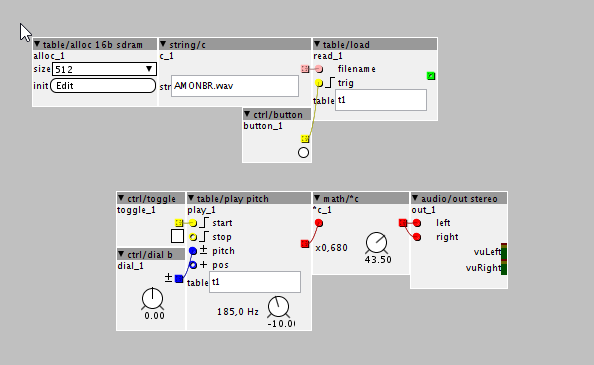
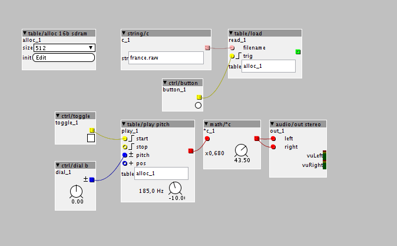

Awesome to see progress being made here – can't wait to brew up a wavetable patch for my drone box. Any sense how close are we to a 1.0.4 release with this feature? Should I get started on compiling the latest diff now or wait for the public builds?
Speed variable Table Play? noob questions
thetechnobear
#42
@Mood_Organ , I did check the init code for table alloc already, and it looks fine.
however I have seen some issues of 'audio artifacts' when starting some patches, that is appears to be related to general initialisation i.e. nothing to do with tables par se, e.g. sometimes it looks like a VCA might start 'open' when it should be shut, that kind of thing.
we did improve this, but its quite a complex area... as we are loading a new code base into memory, and have to ensure things like arrays and static initialisations are correct. which looks like it is the case, but perhaps there are some gremlins till around, or perhaps something to do with object initialisation order (anyone who has used Reaktor will not that it has similar issues)
Note: im not saying this is the case, but it may be.... (and yes, it seems to affect some patches and not others, pretty randomly)
a thought, to see if its left over issues....
create a patch, that has a table, and that is read from and output is made to a scope.
then have a button which fills the table.
we should see in the scope before it starts that the table is zero (so empty on scope), and then will fill when you press the button. BUT if its not initialising then we should see some 'artifacts' in the scope on start up.
as with all bugs, the trick is to isolate to the fewest possible components, and Id like to remove the audio input/writing, in case this is somehow incorrectly open on startup, and so its this that you are seeing.
(though id expect the levels to be pretty low in this case)
@matthewcieplak when I spoke to @johannes last he said he wanted to get a couple of other fixes in place first, but we do want to get it out asap, as both of us have added quite alot since 1.0.3. of course, if it takes a bit longer, then I can still squeeze some extras in. (I added controller objects support last night  )
)
(the pain for release is Windows, as this is a manual process as Travis doesnt support Windows builds, only Linux/Mac OS X ... otherwise we could push releases very easily  )
)
mtyas
#45
I've been playing around with the SimpleSampler patch, and having great fun doing granular madness but I can't manage to do the crossfade trick.
I tried just using a short envelope (as you proposed to start), but that didn't work too well either.
Has anyone dug into this ? found a solution ?
anon5189335
#46
I have same issues. Too many clicks. I also tried using an envelope, but envelopes are not fast enough when making garnular stuff... And I havent figured out how to use the window objects and do the crossfade either.. @timvets proposed the window/crossfade idea. ANy ideas how to get it working, Tim?
philoop
#47
I made this patchtablepitch.axp (3.3 KB)
If i go live, i get the following errors:
Using controller object: controllerpatchload.axs
attempt to create object from subpatch file : objects/controllerpatchload.axs.axs
Unable to created controller for : controllerpatchload.axs
Generate code complete
Start compiling patch
BDIR = C:\Users\Philoop\DOCUME~1\axoloti/build
FIRMWARE = .
"RM"
rm -f C:\Users\Philoop\DOCUME~1\axoloti/build/xpatch.o C:\Users\Philoop\DOCUME~1\axoloti/build/xpatch.elf C:\Users\Philoop\DOCUME~1\axoloti/build/xpatch.bin C:\Users\Philoop\DOCUME~1\axoloti/build/xpatch.d C:\Users\Philoop\DOCUME~1\axoloti/build/xpatch.map C:\Users\Philoop\DOCUME~1\axoloti/build/xpatch.lst
"APP"
arm-none-eabi-g++ -nostdlib -fno-exceptions -fno-rtti -mcpu=cortex-m4 -O3 -fomit-frame-pointer -falign-functions=16 -mfloat-abi=hard -mfpu=fpv4-sp-d16 -fsingle-precision-constant -Wunused-parameter -DCORTEX_USE_FPU=TRUE -DTHUMB_PRESENT -mno-thumb-interwork -DTHUMB_NO_INTERWORKING -mthumb -DTHUMB -std=c++11 -DARM_MATH_CM4 -D__FPU_PRESENT -H -IC:\PROGRA~2\Axoloti\app/CMSIS/Include -IC:\PROGRA~2\Axoloti\app/chibios/os/ports/common/ARMCMx/CMSIS/include -IC:\PROGRA~2\Axoloti\app/chibios/os/ports/common/ARMCMx -IC:\PROGRA~2\Axoloti\app/chibios/os/ports/GCC/ARMCMx -IC:\PROGRA~2\Axoloti\app/chibios/os/ports/GCC/ARMCMx/STM32F4xx -IC:\PROGRA~2\Axoloti\app/chibios/os/kernel/include -IC:\PROGRA~2\Axoloti\app/chibios/os/hal/include -IC:\PROGRA~2\Axoloti\app/chibios/os/hal/platforms/STM32F4xx -IC:\PROGRA~2\Axoloti\app/chibios/os/hal/platforms/STM32 -IC:\PROGRA~2\Axoloti\app/chibios/os/hal/platforms/STM32/GPIOv2 -IC:\PROGRA~2\Axoloti\app/chibios/os/hal/platforms/STM32/I2Cv1 -IC:\PROGRA~2\Axoloti\app/chibios/os/hal/platforms/STM32/OTGv1 -IC:\PROGRA~2\Axoloti\app/chibios/os/hal/platforms/STM32/RTCv2 -IC:\PROGRA~2\Axoloti\app/chibios/os/hal/platforms/STM32/SPIv1 -IC:\PROGRA~2\Axoloti\app/chibios/os/hal/platforms/STM32/TIMv1 -IC:\PROGRA~2\Axoloti\app/chibios/os/hal/platforms/STM32/USARTv1 -IC:\PROGRA~2\Axoloti\app/chibios/boards/ST_STM32F4_DISCOVERY -IC:\PROGRA~2\Axoloti\app/chibios/ext/fatfs/src -I. -IC:\PROGRA~2\Axoloti\app/chibios -Winvalid-pch -MD -MP --include C:\Users\Philoop\DOCUME~1\axoloti/build/xpatch.h -c C:\Users\Philoop\DOCUME~1\axoloti/build/xpatch.cpp -o C:\Users\Philoop\DOCUME~1\axoloti/build/xpatch.o
! C:\Users\Philoop\DOCUME~1\axoloti/build/xpatch.h.gch
. C:\Program Files (x86)\Axoloti\app\chibios/ext/fatfs/src/ff.h
C:\Users\Philoop\DOCUME~1\axoloti/build/xpatch.cpp: In member function 'void rootc::instanceread__1::dsp(const char*, int32_t, int32_t&)':
C:\Users\Philoop\DOCUME~1\axoloti/build/xpatch.cpp:108:34: error: 'class rootc' has no member named 'instancet1_i'
int rem_sz = sizeof(parent->instancet1_i.array)parent->instancet1_i.LENGTH;
^
C:\Users\Philoop\DOCUME~1\axoloti/build/xpatch.cpp:108:62: error: 'class rootc' has no member named 'instancet1_i'
int rem_sz = sizeof(parent->instancet1_i.array)parent->instancet1_i.LENGTH;
^
C:\Users\Philoop\DOCUME~1\axoloti/build/xpatch.cpp:114:34: error: 'class rootc' has no member named 'instancet1_i'
memcpy((char *)(&parent->instancet1_i.array[0]) + offset,(char *)fbuff,bytes_read);
^
C:\Users\Philoop\DOCUME~1\axoloti/build/xpatch.cpp:119:34: error: 'class rootc' has no member named 'instancet1_i'
memcpy((char *)(&parent->instancet1_i.array[0]) + offset,(char *)fbuff,bytes_read);
^
C:\Users\Philoop\DOCUME~1\axoloti/build/xpatch.cpp: In member function 'void rootc::instanceplay__1::dsp(int32_t, int32_t, int32_t, int32_t, int32_t (&)[16], int)':
C:\Users\Philoop\DOCUME~1\axoloti/build/xpatch.cpp:197:43: error: 'class rootc' has no member named 'instancet1_i'
pos = ((uint64_t)(asat>>(27-parent->instancet1_i.LENGTHPOW)))< ^
C:\Users\Philoop\DOCUME~1\axoloti/build/xpatch.cpp:211:29: error: 'class rootc' has no member named 'instancet1_i'
if ((pos>>32)instancet1_i.LENGTH) {
^
C:\Users\Philoop\DOCUME~1\axoloti/build/xpatch.cpp:212:40: error: 'class rootc' has no member named 'instancet1_i'
uint32_t r = __SMMUL(parent->instancet1i.array[pos>>32]<instancet1_i.GAIN,INT32_MAX-(((uint32_t)pos)>>1));
^
C:\Users\Philoop\DOCUME~1\axoloti/build/xpatch.cpp:212:77: error: 'class rootc' has no member named 'instancet1_i'
uint32_t r = __SMMUL(parent->instancet1i.array[pos>>32]<instancet1_i.GAIN,INT32_MAX-(((uint32_t)pos)>>1));
^
C:\Users\Philoop\DOCUME~1\axoloti/build/xpatch.cpp:213:31: error: 'class rootc' has no member named 'instancet1_i'
r = __SMMLA(parent->instancet1i.array[(pos>>32)+1]<instancet1_i.GAIN,(((uint32_t)pos)>>1),r);
^
C:\Users\Philoop\DOCUME~1\axoloti/build/xpatch.cpp:213:72: error: 'class rootc' has no member named 'instancet1_i'
r = __SMMLA(parent->instancet1i.array[(pos>>32)+1]<instancet1_i.GAIN,(((uint32_t)pos)>>1),r);
^
make: *** [C:\Users\Philoop\DOCUME~1\axoloti/build/xpatch.bin] Error 1
shell task failed, exit value: 1
Compiling patch failed ( C:\Users\Philoop\AppData\Local\VirtualStore\Program Files (x86)\Axoloti\app\patches\tablepitch.axp )
can someone help plz?
mtyas
#48
you need to call the table the same name as your table/alloc object. Here it is called alloc_1, so either put that name in the table names of the table/load and table/play_pitch objects (like the image)

or rename the table/alloc to t1
I recommend using .raw files too